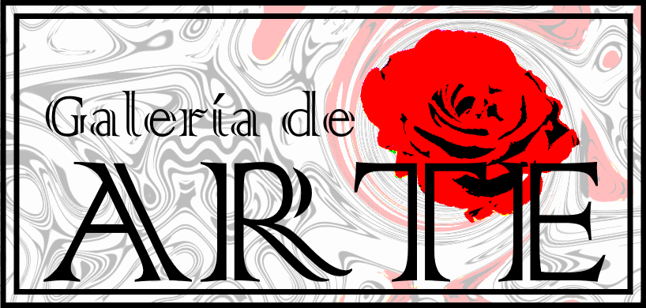
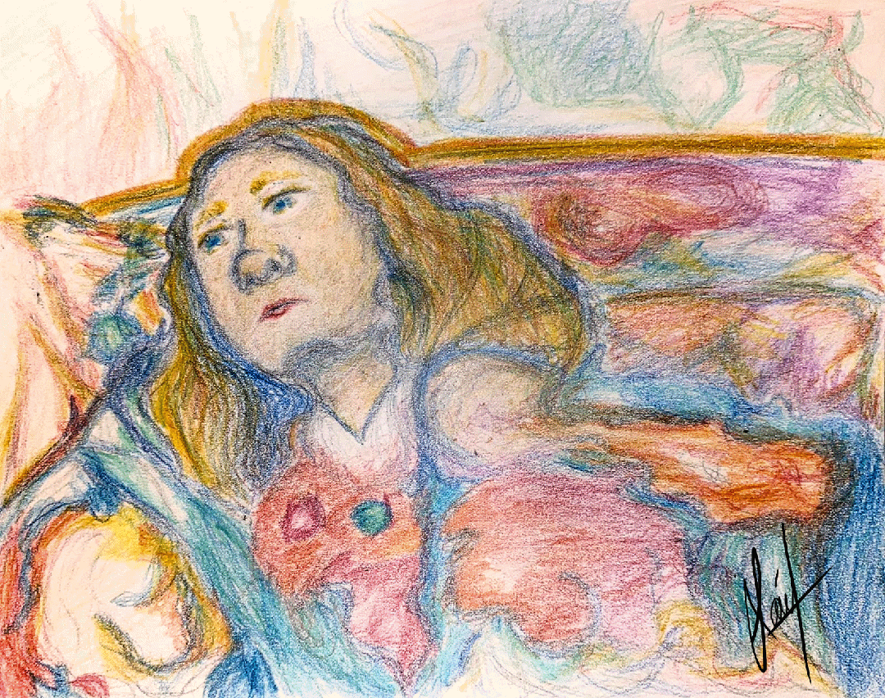
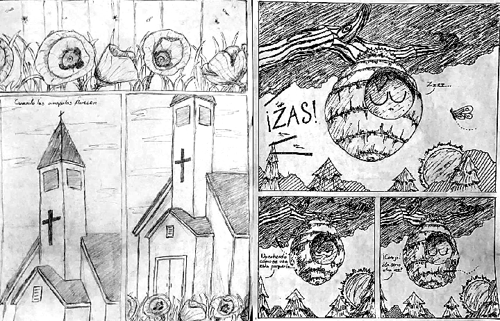
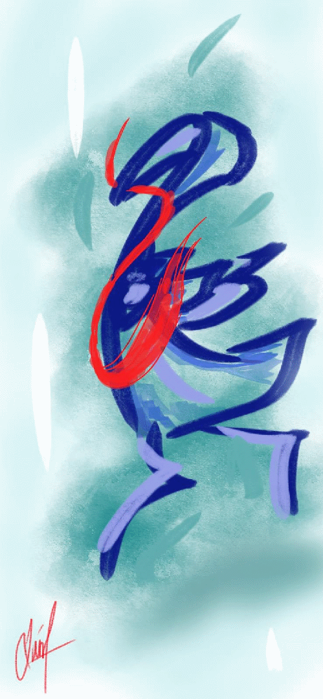
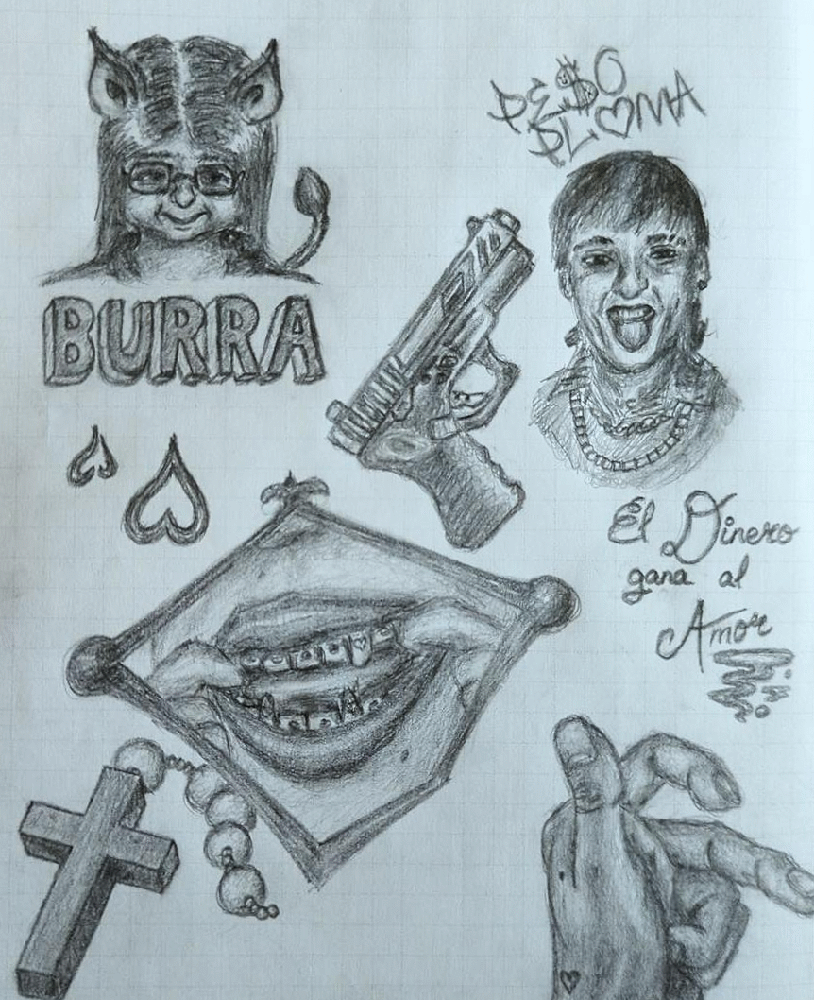
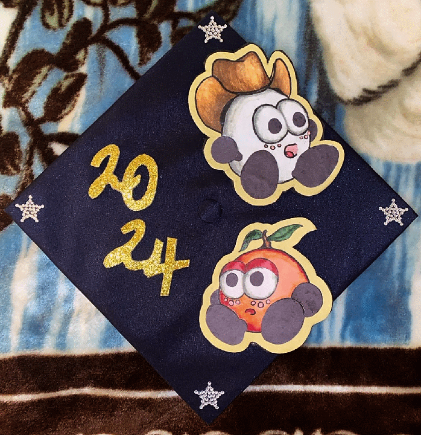
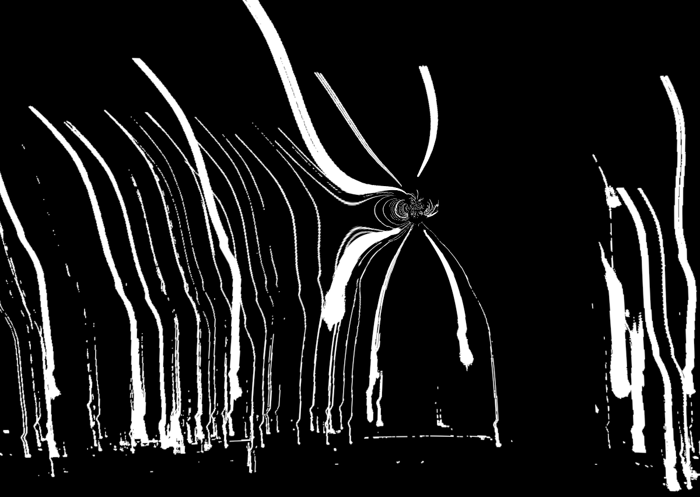

Al conocer a una nueva persona, toma tiempo para formar una conexción sincera. Por eso quizá, sorprende como con el tiempo empiezas a agradecer a Dios por poder haber conocido a esa persona, y sorprende cómo sientes cosas que siempre dudabas poder sentir por ella. La conoces más, inseguro de lo que sientes, y después Dios te manda un mensaje: Él la eligió para que ustedes encuentren su reino. Reflexionas en este destino, y qué tan agradecido estás, pero con el tiempo entiendes menos y menos cómo se unirán. Con fe, todo es posible. Cargo fe en Dios, y al mirar a esa persona, noto un durazno en su corazón, dulce y fragante. El durazno se derrite, y su ser entero se mezcla en un solo material de color uniforme e intangible.

Muchas veces he intentado escribir libros. Muchas otras veces, he intentado dibujar cómics. La hoja en la izquierda fue hecha probablemente antes de entrar a la preparatoria, diría que la dibujé en 2019 o antes. Me acuerdo de ese momento, sin embargo. Dibujé las amapolas con mucho cuidado, y me tardé un montón en completarlas. Sinceramente no me acuerdo de que se iba a tratar el cómic. Es sorprendentemente bien hecho para su tiempo, pues en 2019 la verdad aún no era muy bueno para dibujar. Las sombras, aunque no muy desarrolladas, funcionan como sombras en la vida real, y se nota un esfuerzo de cuidado en su complexión. La hoja a la derecha estoy casi seguro de ser de 2022, pero hay una probabilidad pequeña de ser de finales de 2021. Era un cómic que quería crear con mis personajes "Don Totoltetl" y "Sr Abeja", quienes creé hace muchos años y he estado desarrollando más y más al pasar el tiempo. El cómic iba a tratar de las aventuras de estos dos personajes, viviendo en una colmena y de repente necesitando viajar en una excursión. Nunca pude terminarlo, sin embargo, tardé demasiado en producir las hojas.

En el Edomex, cuando visité a mis tíos por parte de mi madre, conocí la vida en medio de los cerros. La Ciudad de México es demasiado grande para apreciar sus cerros, que frecuentemente se esconden detrás de la contaminación. En el Edomex, sin embargo, noté como los cerros se levantan, y a la distancia noté el cambio en elevación, desapareciendo la carretera en el horizonte. No es para decir que no haya contaminación, pero en ese lugar uno se siente libre, uno con la naturaleza. Es inexplicable, una sensación que no existe en la Ciudad de México, y detrás de esos cerros, me siento llevar por una ola de esperanza. Como un pajaro volador, me llevan, y desaparezco también detrás de los cerros.

Las clases de ingeniería, aunque no eran obligatorias, siempre de alguna manera terminarían en mi horario durante la preparatoria. Odié la ingeniería, y cada vez que tenía que ir a esas clases mi día inmediatamente empeoró. Muchas veces, tenía que diseñar objetos para después crearlos en la vida real, pero muchas veces me distraía, y terminaba dibujando lo que me daba la gana. Un día, una de las páginas de mi cuaderno de ingeniería terminó siendo el hogar de mis dibujos más detallados hechos en esa clase, y con eso apareció esta colección de diversos objetos y referencias. Referencias de mis exes, de mis problemas románticos, y de mi identidad con la fe y con mi barrio. Uno termina pensando: ¿Cómo es que llegamos hasta aquí? Empezando con dibujos tan simples y fachas, y llegar hasta aquí, creando obras detallistas de la nada. Me enorgullece que mis esfuerzos con el arte durante todos estos años sí han valido la pena, y agradezco a Dios por este don que me dió.

No planeé hacer algo para mi capa de graduación. Al enterarme de que era uno de los alumnos destacados que tendría que hacer un discurso, me di cuenta de que probablemente tendría que hacer algo. Desde la secundaria, tenía un personaje que yo mismo creé y que ha ido evolucionando con los años. Ese personaje es alguien que he usado con varios proyectos y dibujos, y entonces decidí utilizarlo para mi capa de graduación. Fue una obra algo complicada, pues nunca he trabajado con tela, y tuve que salir a comprar útiles como papel y resistol. Al fin, terminó en éxito, y mi capa era algo que, aunque no le ponían mucha atención, me enorgulleció. Mis personajes nunca los he desarrollado de esa forma, y al verlos en un estado tan real y completo, en verdad me hizo muy feliz. El personaje ha cambiado muchísimo con los años, el original se parece absolutamente nada al que existe hoy en día. "Don Totoltetl" no es su nombre original, pues en los primeros años de su existencia se llamaba "Eggman" y llevaba corbata. Tampoco era mucho para presumir, y la verdad es que las situaciones en las que lo dibujaba no eran muy bonitas. Ahora, Don Totoltetl es un personaje íntimo, un personaje que frecuentemente se encuentra en mis obras y un personaje con carácter amigable y cariñoso; es un personaje que casi siempre sonríe.
